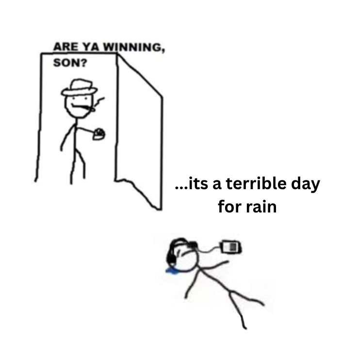
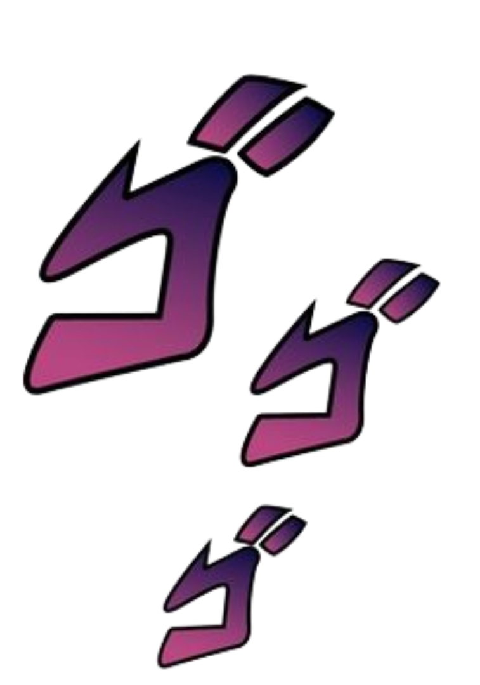

changelog
- added projects page
- deployed

hello you, i am sherzod, 23 years old and living in xorazm, Uzbekistan. i
studied CS until 2025 spring and decided to drop out because of burnout.
this is probably 5th time I made a new person and/or blogging website. i
dont know why I can't resist the urge to just start over every time but in my
defence they were all pretty boring as well. that's why i decided to change
things up and went full Y2K, with this exsessive and obnoxious
webpage, filled with cool and maybe nerdy stuff that i like, hoping this one
will stick.
just a heads up, this website is an ongoing project, so you may find places
that are still a work in progress. enjoy exploring!

i have been doing coding since 2019, playing around with api of different platforms that i use to get my own stats and work with them or just building fun stuff in general. right now this website is my biggest priority but making it responsive is the last one on my list because i dont use mobile that often anyway and i need this to look the way i like on a device i like first, rest later. currently i am looking for a job, so if you are interested in hiring me for official employment or as a freelancer contact me on linkedin or mail me: untakendummy at gmail dot com